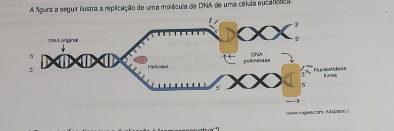

Professora: Kamila
Os carboidratos são biomoléculas formadas principalmente por carbono, hidrogênio e oxigênio, e exercem papel fundamental no metabolismo energético dos seres vivos. Presentes em alimentos como frutas, cereais e massas, essas moléculas são rapidamente metabolizadas pelas células, fornecendo a glicose necessária para a produção de ATP — a principal "moeda energética" dos organismos. Devido à sua rápida disponibilidade, os carboidratos são considerados a principal fonte de energia para a maioria dos processos celulares.
Entretanto, além da função energética, certos carboidratos também participam da constituição de estruturas que oferecem sustentação e proteção em diferentes organismos.
Cite dois exemplos de polissacarídeos com função estrutural, indicando o tipo de organismo em que estão presentes.
Dois exemplos clássicos de polissacarídeos com função estrutural são a celulose, presente na parede celular das células vegetais (dando sustentação e rigidez às plantas), e a quitina, presente no exoesqueleto de artrópodes (como insetos e crustáceos) e também na parede celular de fungos. Em ambos os casos, o polissacarídeo tem função estrutural/de proteção, e não energética, como o amido ou o glicogênio.
Os lipídios estão amplamente presentes na alimentação humana, especialmente em produtos de origem animal e vegetal, como queijos, óleos, carnes e sementes oleaginosas. Essas substâncias orgânicas, compostas por longas cadeias carbônicas, são insolúveis em água e apresentam uma grande diversidade de funções biológicas nos seres vivos. Por isso, são utilizados pelo corpo em diferentes situações fisiológicas.
Com base nesse contexto:
a) Descreva a estrutura química do principal tipo de lipídio presente nesses alimentos, o triglicerídeo.
b) Qual é sua principal função no organismo?
a) Um triglicerídeo é formado pela união de 1 molécula de glicerol com 3 moléculas de ácidos graxos, unidas por ligações do tipo éster (numa reação de esterificação/condensação, com liberação de água em cada uma das três ligações formadas).
b) A principal função dos triglicerídeos no organismo é servir como reserva energética — são a forma mais eficiente de armazenar energia no corpo (mais calorias por grama do que carboidratos ou proteínas), armazenada no tecido adiposo. Secundariamente, também desempenham funções de isolamento térmico e proteção mecânica de órgãos.
As proteínas são macromoléculas essenciais à vida, compostas por longas cadeias de aminoácidos. Elas desempenham diversas funções no organismo, como atuar na estrutura celular, no transporte de substâncias, na defesa do corpo e como catalisadoras de reações químicas (enzimas). A estrutura e a função de uma proteína estão diretamente relacionadas à sequência e à organização espacial dos seus aminoácidos.
a) Qual é o nome da ligação química formada entre dois aminoácidos? Quais são os produtos resultantes desse processo de ligação?
b) O que é desnaturação proteica? Cite dois fatores que podem desencadear esse fenômeno.
a) A ligação formada entre dois aminoácidos é a ligação peptídica. Ela se forma por uma reação de síntese por desidratação (condensação): o grupo carboxila de um aminoácido reage com o grupo amina do outro, formando a ligação peptídica e liberando uma molécula de água como subproduto.
b) Desnaturação proteica é a perda da estrutura tridimensional (conformação espacial) da proteína, o que geralmente resulta na perda de sua função biológica — sem que, necessariamente, as ligações peptídicas da estrutura primária sejam rompidas. Dois fatores que podem causar desnaturação são temperatura elevada (calor excessivo) e variações extremas de pH (meio muito ácido ou muito alcalino).
Em um laboratório de biotecnologia, pesquisadores estão desenvolvendo materiais didáticos para o ensino de genética. Durante uma atividade, solicitaram que os estudantes criassem um modelo tridimensional da menor unidade estrutural capaz de formar longas cadeias de DNA e RNA. Essa unidade é fundamental para o armazenamento e a transmissão da informação genética.
Ajude esses estudantes: represente graficamente essa estrutura molecular. Além disso, nomeie-a e identifique suas partes constituintes.
A unidade estrutural é o nucleotídeo. Ele é formado por três partes: um grupo fosfato, uma pentose (açúcar de 5 carbonos — desoxirribose no caso do DNA, ou ribose no caso do RNA) e uma base nitrogenada (que pode ser adenina, timina/uracila, citosina ou guanina). Na representação gráfica, costuma-se desenhar o fosfato ligado à pentose, e a pentose ligada à base nitrogenada — essa é a unidade que se repete e se encadeia (fosfato-pentose-fosfato-pentose...) formando as longas cadeias de DNA e RNA.
Ao longo da vida de uma célula, diferentes moléculas estão envolvidas na transmissão, regulação e expressão da informação genética. Algumas dessas moléculas, os ácidos nucleicos, são encontradas principalmente no núcleo, enquanto outras atuam em diferentes regiões do citoplasma, desempenhando papéis distintos no funcionamento celular. Apesar de apresentarem semelhanças estruturais, essas moléculas possuem composições e funções que as diferenciam claramente.
Complete a tabela abaixo, comparando os ácidos nucleicos DNA e RNA:
| DNA | RNA | |
|---|---|---|
| Nome | ||
| Função principal | ||
| Número de fitas | ||
| Bases nitrogenadas | ||
| Pentose |
| DNA | RNA | |
|---|---|---|
| Nome | Ácido desoxirribonucleico | Ácido ribonucleico |
| Função principal | Armazenar a informação genética | Expressar a informação genética (síntese de proteínas — RNAm, RNAt, RNAr) |
| Número de fitas | Dupla fita | Fita simples |
| Bases nitrogenadas | Adenina, Timina, Citosina, Guanina (A, T, C, G) | Adenina, Uracila, Citosina, Guanina (A, U, C, G) |
| Pentose | Desoxirribose | Ribose |
Durante uma atividade de bioinformática, estudantes utilizaram um software para analisar sequências de DNA extraídas de diferentes células. Uma das tarefas consistia em interpretar uma das fitas da molécula e prever a composição completa do DNA, respeitando as complementaridades entre as bases nitrogenadas. A partir dessas análises, os estudantes puderam comparar proporções de bases em diferentes organismos e verificar regularidades moleculares.
A seguir, observe uma sequência de uma das fitas de DNA:
3' – ACG TTA CGG ATC GAA – 5'
Com base nessa informação:
a) Escreva a sequência da fita complementar, indicando corretamente a polaridade (5' e 3').
b) Caso a sequência de DNA apresentada no enunciado da questão fosse utilizada como base para a produção de uma molécula de RNA, como esta molécula seria?
a) Pareando cada base pela complementaridade (A-T e C-G) e invertendo a polaridade (já que as fitas de DNA são antiparalelas):
5' – TGC AAT GCC TAG CTT – 3'
b) Na transcrição, o RNA é sintetizado complementarmente à fita molde de DNA, substituindo a timina (T) por uracila (U):
5' – UGC AAU GCC UAG CUU – 3'
A figura a seguir ilustra a replicação de uma molécula de DNA de uma célula eucariótica:

(www.nagwa.com. Adaptado.)
a) O que significa dizer que a duplicação é "semiconservativa"?
b) Qual é a função da enzima helicase e da DNA polimerase nesse processo?
a) Dizer que a duplicação do DNA é semiconservativa significa que cada uma das duas moléculas de DNA "filhas" resultantes da replicação é formada por uma fita antiga (original, conservada) e uma fita nova (recém-sintetizada) — ou seja, metade de cada molécula final vem do DNA original, e metade é sintetizada de novo.
b) A helicase é a enzima responsável por romper as pontes de hidrogênio entre as bases nitrogenadas complementares, separando (desenrolando) as duas fitas da dupla-hélice original e abrindo a "forquilha de replicação". A DNA polimerase é a enzima responsável por adicionar os novos nucleotídeos, complementares à fita molde, sintetizando assim cada nova fita de DNA (sempre no sentido 5' → 3').